前言
寻人启事
我侄子在南京工作时候办公室着火，恰好我带着一些朋友去找他玩，后来我侄子就失踪了，家里老人四年前去世了，现在我迫不得已当了家庭顶梁柱，唉。
有没有好心人帮我找找小侄子啊?
洪武三十五年
朱棣（四叔）
续接上文。这篇博客是 6.22 最后一次南下回家的流水账！最后一次南下回家的中转站选择了江苏南京！
导览

鼠标点击，即可跳转
正文
6.22
06:29 京沪高铁
连接两京一津一沪！
最后一次放学回家决定奢侈一把😎！购买京沪超级大标杆车票 G1 07:00 北京南-10:24 南京南，￥533。我们中国真是太厉害了！只需要 3 小时 24 分钟能跑完 1000km 的路程🤩！在北京的牛马当天就可以去上海挨领导骂，然后再回去😭。
{kind=link}
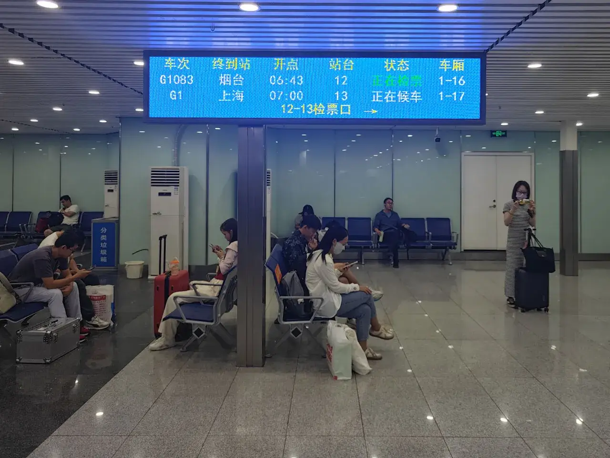
北京南站的规划设计与其他车站的不同，通往天津/上海的列车都有专门的快捷进站窗口。但是不能像北京西那样地铁下来进站免安检。G1 居然提前半小时就允许检票上车了。
06:31 快速南下
{kind=link}
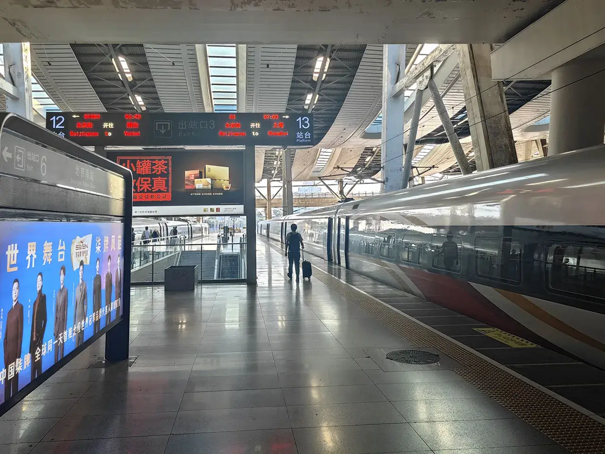
这次回去感觉得很久以后才会来北方了😇。
是上海局的列车！乘务员过来推销的东西都跟其他的车不一样，推销的是星巴克咖啡和果切。看到有位大佬直接买了一份，连价格都没看，老板大气😭！
08:26 过河！
{kind=link}
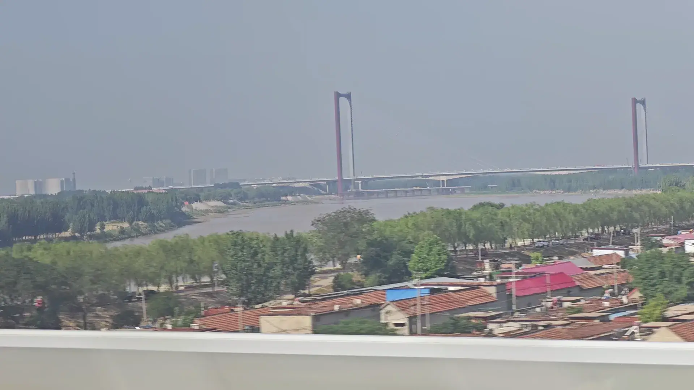
列车很快就加速到了 350km/h 左右😱！但尽管它不打算停济南，但因为黄河大桥有时速限制 250km/h，它也得减速。
之后又是一阵狂奔直扑南京了！
08:29 山东泰安
{kind=link}
{kind=link}
泰山山脉？
座位在右侧靠窗的位置。看导航泰山风景区在车的左侧，看不到。
所以不知道窗外的这座山是否仍属于泰山山脉的范畴？
之后就几乎见不到山了！
09:11 徐州地方
{kind=link}
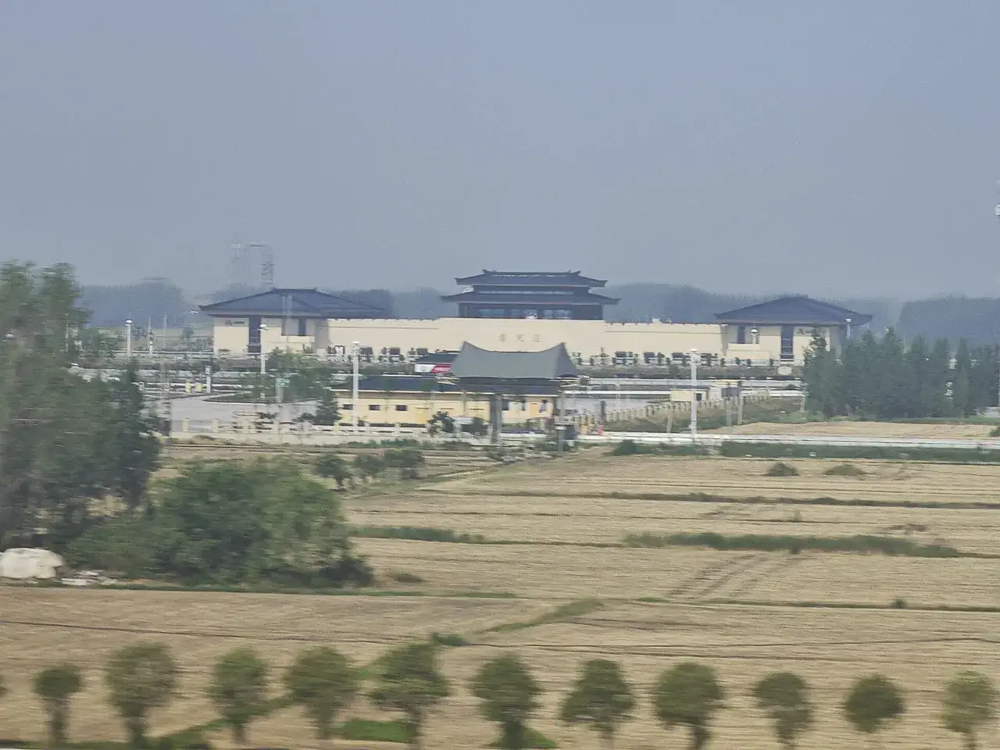
窗外全是可爱小雾霾😭！突然想到以后很难再看到雾霾了，我是一点也不舍得。
雾霾下隐隐约约的“台儿庄”三个字，看着是新的高铁站？
我不明白
徐州地方，历代大规模征战五十余次，是非曲折难以论说，但史家无不注意到，正是在这个古战场，决定了多少代王朝的盛衰兴亡、此兴彼落，所以古来就有问鼎中原之说。
当年先总理令革命军分三路会合徐州，兴师北上，光复徐州的第二天，清帝见大势已去，宣告退位。民国十六年四月，也正是在徐州城郊，我有幸亲率数十万健儿征讨北洋军阀孙传芳、张宗昌，大获全胜！
我不明白，为什么大家都在谈论着项羽被困垓下，仿佛这中原古战场对我们决定了凶多吉少。二十年前，我从徐州踏上征途，开始了第二次北伐，中华秋叶海棠遂归于一统。本党本军所到之处，民众竭诚欢迎，真可谓占尽天时，那种勃勃生机、万物竟发的境界，犹在眼前。短短二十年之后，这里竟至于一变而成为我们的葬身之地了么？
无论怎么样，会战兵力是以八十万对六十万，优势在我！
校长
09:44 珍珠港
{kind=link}
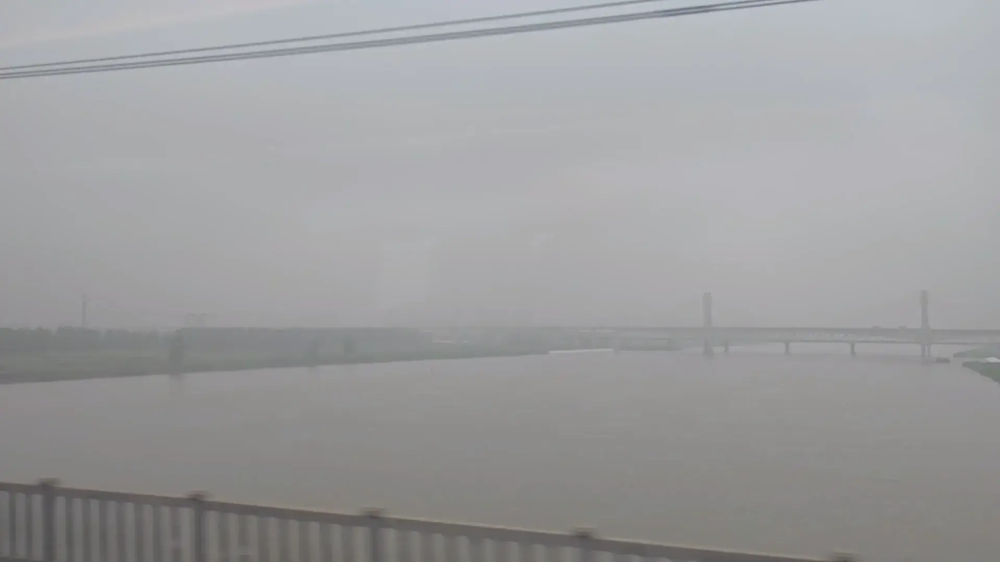
这回是真到南方了！
10:15 侵犯大吴疆土
{kind=link}
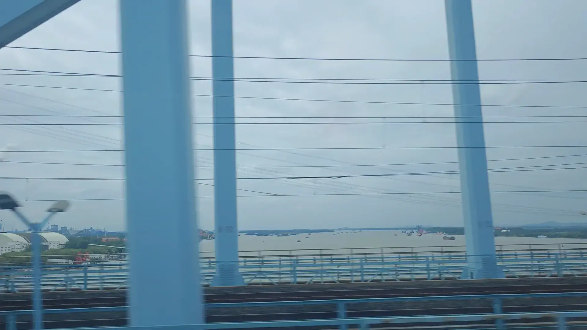
这长江天险之后，便是江东铁壁！
10:17 南朝四百八十寺之佛顶寺
{kind=link}
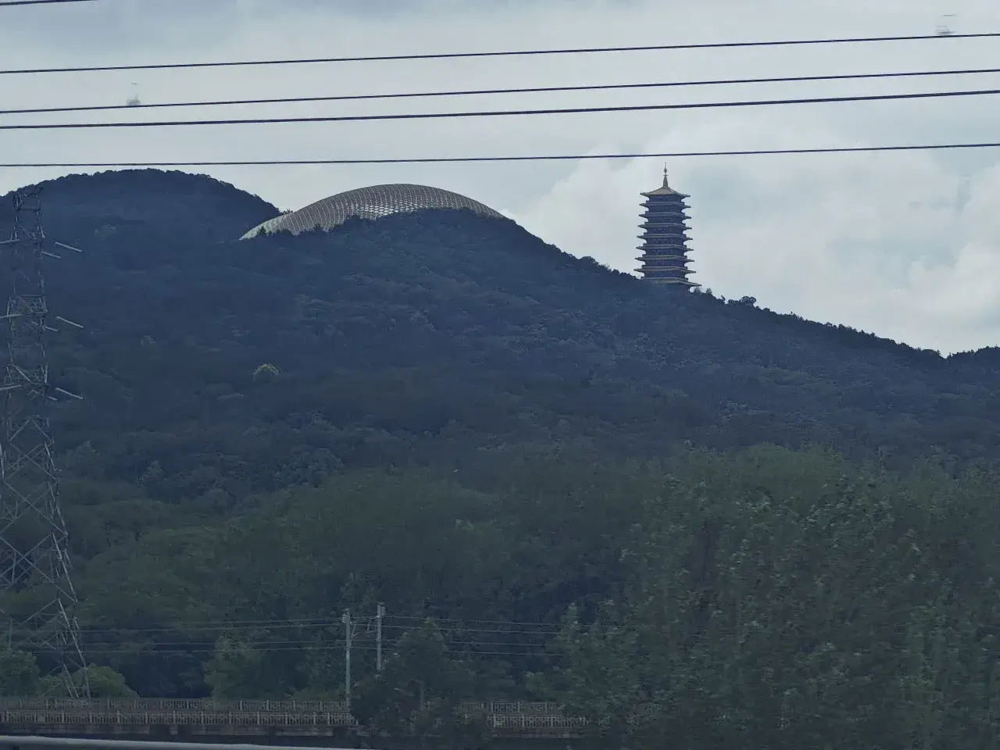
江南春
千里莺啼绿映红，
水村山郭酒旗风。
南朝四百八十寺，
多少楼台烟雨中。
据说是全中国装修得最奢华的寺庙，修建它耗费了 40 个亿！不过这次旅行计划中并没有它😇。
11:46 抵达公寓！
{kind=link}
南京南站-2 号线-浮桥站，￥4。
先拖着一堆行李吃了碗馄饨（偷听老板讲话还是泉州人），然后去公寓，然后就南北走反走错路了😵。高铁还是太快了，都到站了还没有到民宿最早入住时间😶🌫️。不过还好允许先将行李寄存在一个特定房间里。
12:05 总统府
{kind=link}
{kind=link}
前朝的事了
从北京过来觉得南京城好小😵💫，扫了共享单车开始骑。因为起太早想提神就点了杯瑞幸咖啡，结果咖啡骑着骑着颠掉了一半，让本来就是一堆冰块的咖啡变得更少了😵！
12:21 新街口
{kind=link}
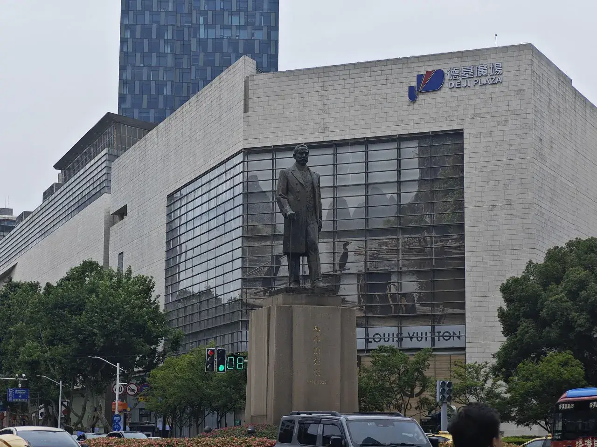
据说这是南京最繁华的地方。
南京似乎不怎么抓非机动车，南京小哥逆行闯红灯太可怕了😱！支持福州严厉监管非机动车！
12:41 武庙
{kind=link}
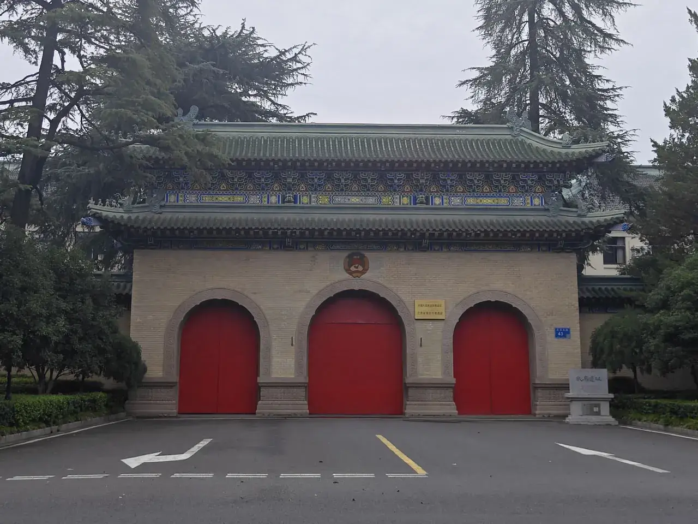
临到鸡鸣寺那片还能看到一些古迹，不过似乎已经被机关占用了。南京市政府门口像个牌楼，不敢拍🤧。
12:47 南朝四百八十寺之同泰寺
{kind=link}
{kind=link}
{kind=link}
古鸡鸣寺
到达鸡鸣寺￥10。然后就可以获得三根香，一点也没有雍和宫送一大捆来得大气🫤。
{kind=link}
{kind=link}
{kind=link}
{kind=link}
{kind=link}
人间佛国
现在看来就是个规模一般般的寺庙。但据说这就是和尚皇帝梁武帝三次舍身的地方！后来佛教徒只能吃素就出自于此。
鸡鸣寺位于南京市玄武区鸡笼山东麓山阜上，又称古鸡鸣寺，始建于西晋永康元年（300 年），已有一千七百多年的历史，是南京最古老的梵刹和皇家寺庙之一，香火一直旺盛不衰，自古有“南朝第一寺”，“南朝四百八十寺”之首的美誉，南朝时期与栖霞寺、定山寺齐名，是南朝时期中国的佛教中心。 鸡鸣寺历史可追溯至东吴的栖玄寺，寺址所在为三国时属吴国后苑之地；西晋永康元年（300 年）在此倚山造室，始创道场；东晋以后此处被辟为廷尉署；南梁大通元年（527 年）梁武帝在鸡鸣埭兴建同泰寺，曾四次“舍身”于此，并在寺院内颁布《断酒肉文》，为佛教素食肇始，使这里从此真正成为佛教胜地，天竺高僧菩提达摩从印度来建康（今南京）时就居于此；南唐时易名净居寺，后改圆寂寺；宋朝时改为法宝寺。
{kind=link}
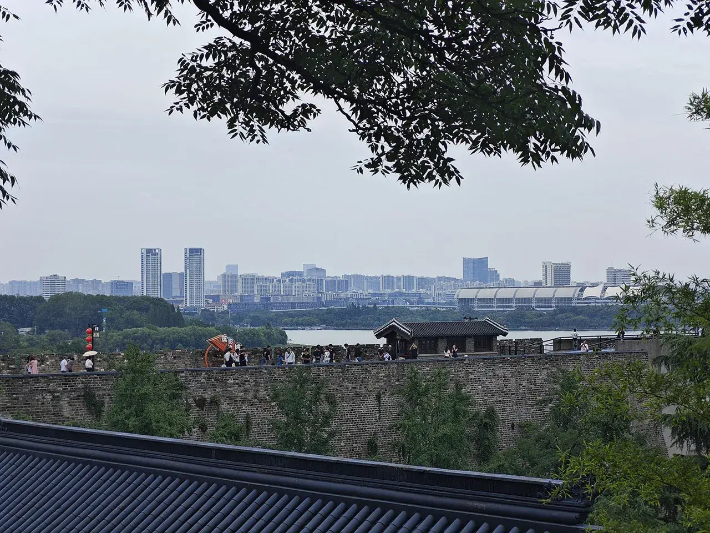
这个庙后面就是玄武湖了。BB 说玄武湖没啥意思，就不看了！
13:07 古胭脂井
{kind=link}
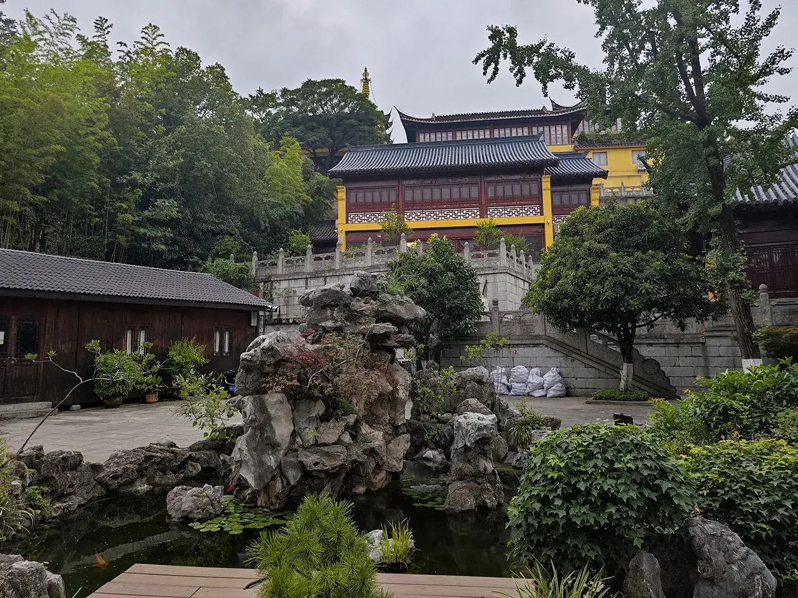
在人挤人的寺庙后面，有一个小道，可以看到鸡鸣寺景区的神秘景点！
{kind=link}
{kind=link}
{kind=link}
{kind=link}
{kind=link}
建康龙井
胭脂井建于南朝陈代。六朝最后一个皇帝陈叔宝是个偏爱寻欢作乐、不关心国事的皇帝，虽然他在位时常传来前方敌情紧张的报告，但陈叔宝依然沉酒于饮酒作乐之中。公元 588 年，杨广带领 51 万隋兵分八路向建康进攻，并最后攻陷建康（南京）。当陈后主听到外面杀声震天时，这才意识到大事不好，慌了手脚。他匆忙带着宠妃张丽华、孔贵妃逃到景阳楼下，想找个地方躲起来。这时发现了眼前有一口枯井，他连忙拉着两位妃子躲进了枯井里。隋军最后盘问太监才知道，陈后主躲进了井里。隋军士兵高喊让里面的人出来，但井里却没有人答应。隋军士兵又大喊说“再不出来，就扔石头砸进去了。”里面这才传来痛哭声，隋兵们用绳索把三人从井里拉了上来。两名妃子当场被杀，陈后主被俘虏。
据传，当时两贵妃化妆的脂粉比较浓艳，在进出枯井的过程中，这些脂粉都掉落在井栏上，留下了千年抹不掉的痕迹。后人因此称这口井为“胭脂井”，也称“辱井”。
隋唐以后，台城屡遭破坏，景阳楼早毁，胭脂井也随之湮灭。宋以后，胭脂井原物已毁，后人重开并在井旁竖“古胭脂井”碑，供人观赏。清道光年间，鸡鸣寺住持脱颖移回鸡鸣寺保护，并立栅栏保护。1935年时任国府委员、南京市市长的马超俊，在鸡鸣寺古井旁竖大石碑一块，题“古胭脂井”四字。现在鸡鸣寺东侧重竖亭、立“古胭脂井”碑，供游人凭吊历史。
2014 年 7 月，“胭脂井的传说”被列入“南京市非物质文化遗产”。
一口没啥特色的井😇。作为南京当年被攻破的一个代表，被列入“南京市非物质文化遗产”属实是有点地狱笑话了。
13:15 南京城墙之解放门
{kind=link}
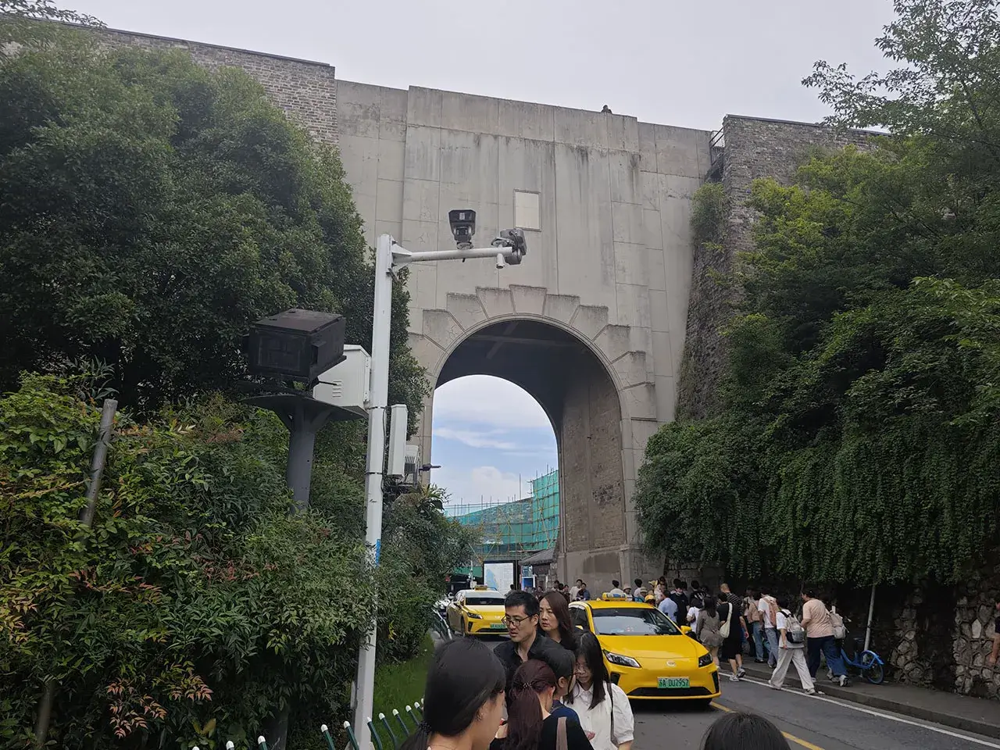
鸡鸣寺的出口直通南京城墙的入口，看着像是安排好的😇。进入南京城墙￥15，看着比西安城墙便宜不少，而且这段时间南京恰好非常凉爽，可以多走一走！
13:24 南京城墙
{kind=link}
{kind=link}
开炮！
然而，“一分钱一分货”，南京城墙并不像西安那样是连续的，而且目前遗存的也没有西安的那么完整🤔。
{kind=link}
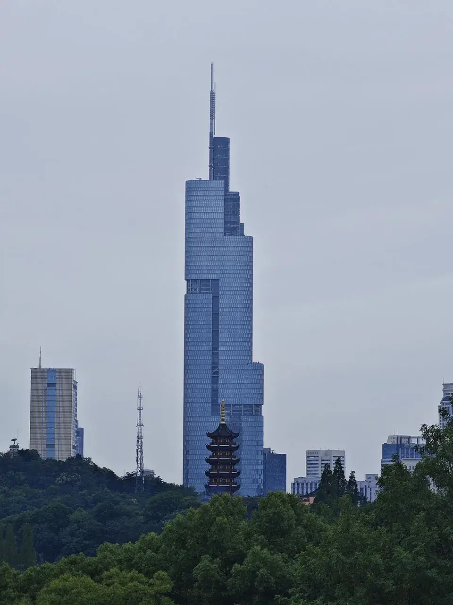
城墙前面有个小哥试图拍摄紫峰大厦和鸡鸣寺古今同框，俺也跟在后面拍一张。
{kind=link}
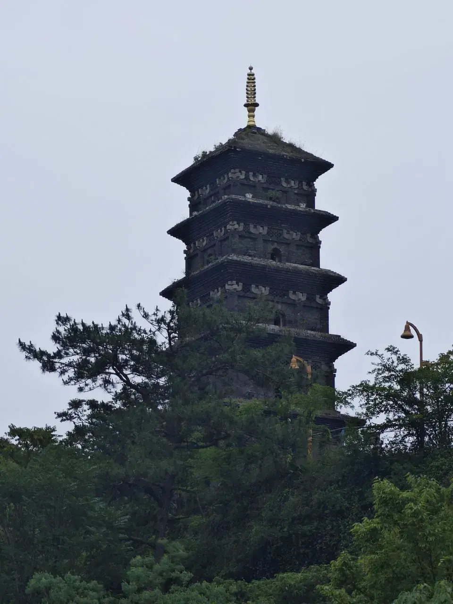
{kind=link}
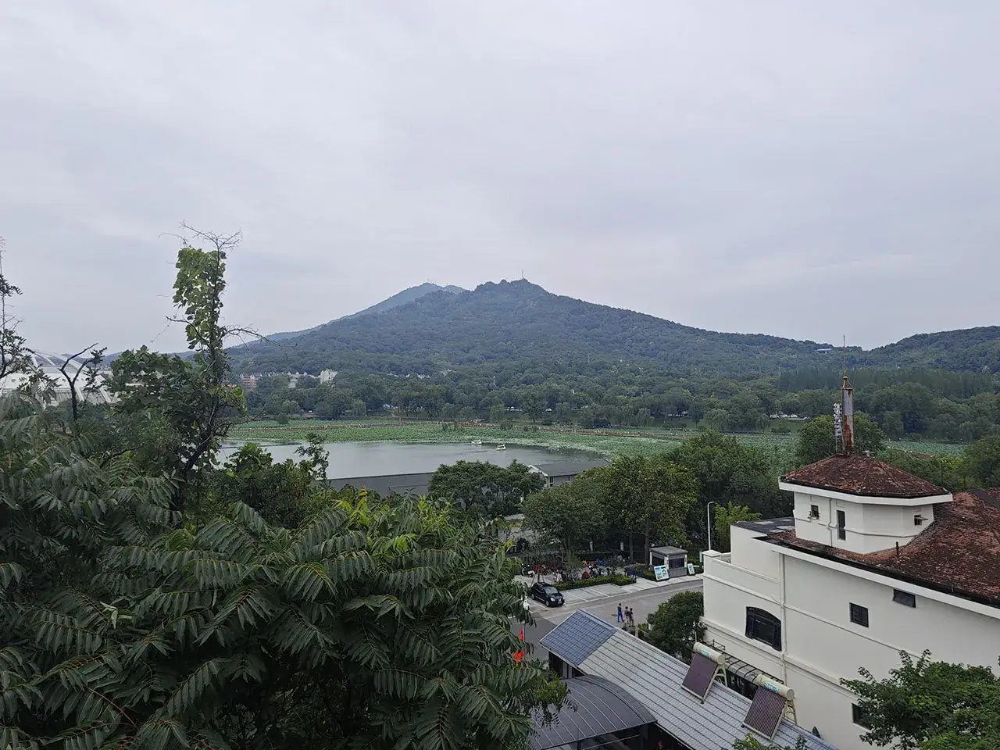
13:55 南京城墙之太平门
{kind=link}
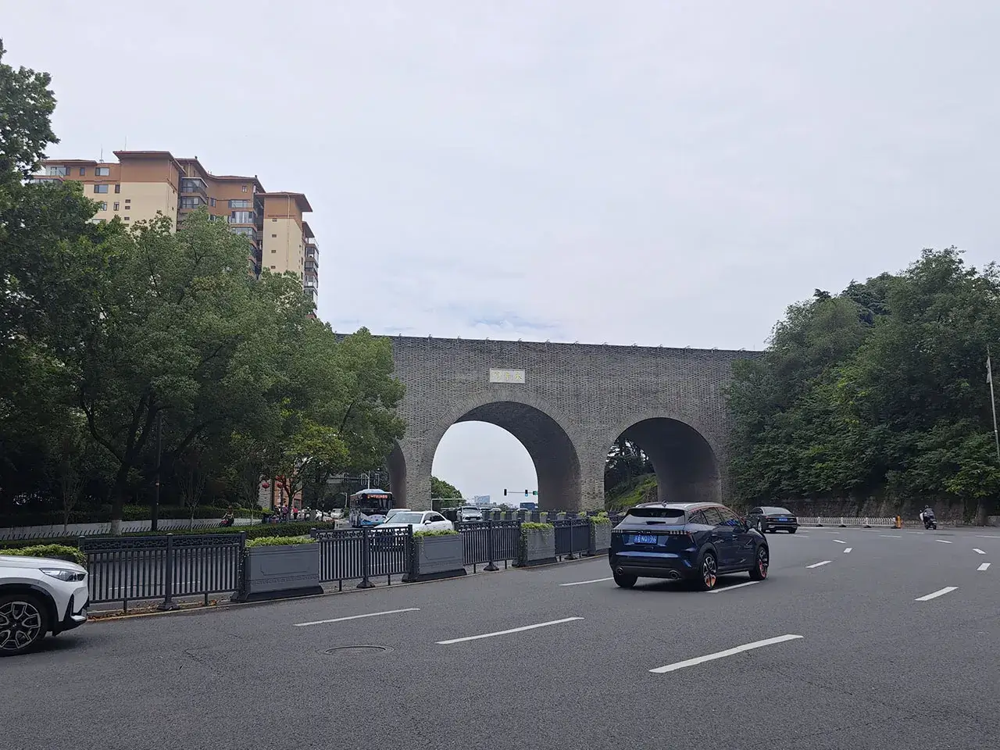
不让走了！与此同时，民宿也终于可以入住了！于是改坐公交车回去了。
14:41 躺！
{kind=link}
结果又坐反了公交😵。坐着 2 路公交一直往北走了。意识到的时候还想着要不要将错就错，但是看着再往北也没啥东西，只好认了一阵折腾回去了。
因为后面两天的旅行规划都非常地疯狂🤪。从上次西安折腾到现在还没有好好休息，所以这天还是想着悠着点，洗个澡躺到晚上再说！
16:41 南京烤鸭
{kind=link}
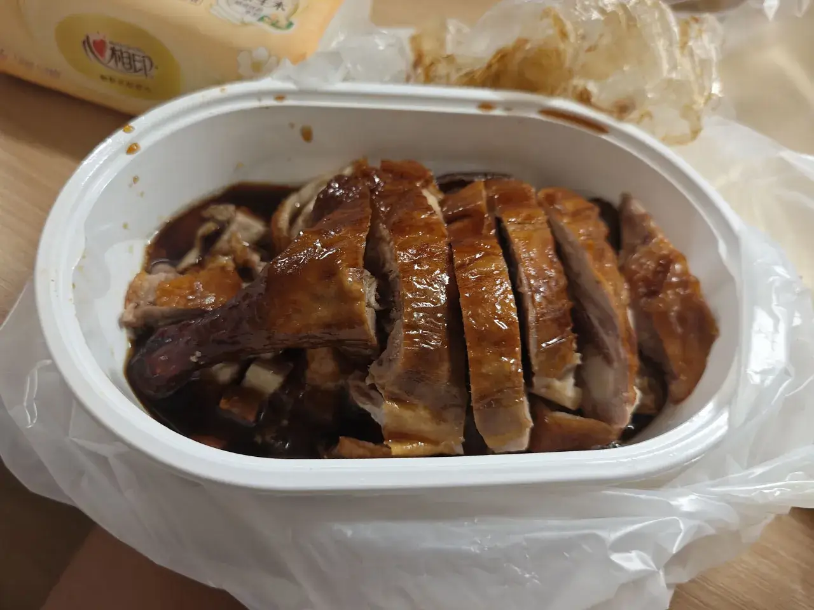
来南京就得吃鸭子，但是鸭血我不爱吃，盐水鸭感觉也好吃不到哪里去，于是就美团上看着楼下有个￥14.8 四分一只烤鸭（感觉好便宜），就下楼整了一份，然后在整了张牛肉烧饼￥15 开吃！
京二爷的烤鸭吃起来是湿的不是脆的，感觉没有京大爷的好吃😇。
17:46 南京城墙之中华西门
{kind=link}
{kind=link}
中华西门
感觉南京的地铁并不是很方便，就还是接着 2 路公交坐到中华门好了。
其实是个挺沉重的地方。
17:48 南朝四百八十寺之大报恩寺
{kind=link}
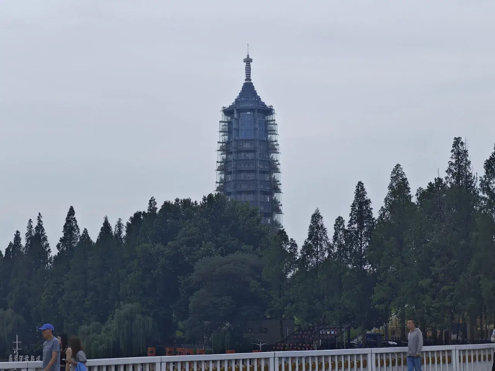
来到了秦淮河畔~秦淮河以南是一个看着像未来建筑的寺庙。
17:49 南京城墙之中华门
{kind=link}
{kind=link}
{kind=link}
历史的气息
在外面观看的时候，刚好城门刚刚关上。
18:03 五重瓮城
{kind=link}
{kind=link}
{kind=link}
天下第一瓮城
据说中华门里面是重重瓮城，当年侵华日军也没能从这个门里攻进去！
进去要￥50，下次一定！骑车去夫子庙了。
18:12 夫子庙景区
{kind=link}
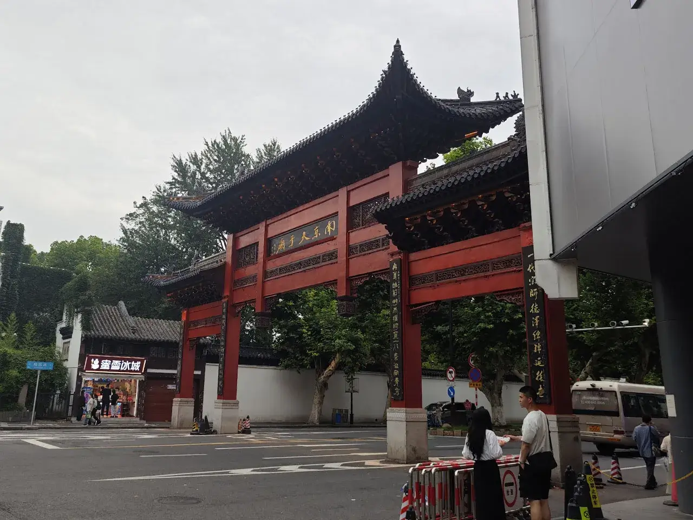
18:14 金陵第一园
{kind=link}
{kind=link}
{kind=link}
瞻园
几个江南园林感觉都是差不多的，于是就看一下这个“金陵第一园”好了。￥30。
{kind=link}
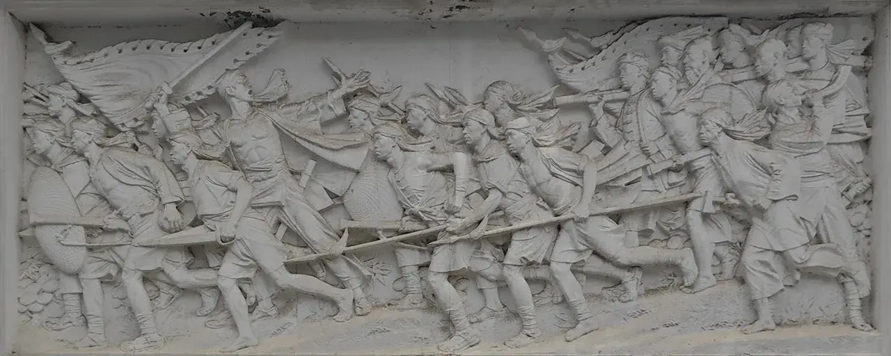
金田起义浮雕
原件系人民英雄纪念碑下须弥座四周十块汉自玉浮雕中的第二块，由李宗津画稿，王丙召雕刻。太平天国历史博物馆于 70 年代从北京运回其石膏复制件。80 年代瞻园路拓宽后，馆方将之嵌入照壁，供人瞻仰。
浮雕描绘了金田起义中太平军将士从山坡奋勇冲下旌旗衣衫迎风招展，轰轰烈烈进行革命斗争的壮阔画面其主题思想表现突出，构图严谨朴素，造型细腻真实生动再现了太平天国农民运动这一中国近代史上的重大历史事件。
这个美丽的园林曾经是作为杨秀清的东王府的存在，门口还有长毛的卡通头像作为指路牌，作为导致当时南京人口几乎归零的中国近代史上的重大历史事件，真是太可怕了😱！
18:16 园林与大炮
{kind=link}
{kind=link}
{kind=link}
{kind=link}
{kind=link}
{kind=link}
{kind=link}
{kind=link}
{kind=link}
{kind=link}
{kind=link}
{kind=link}
{kind=link}
“吉祥”
瞻园如今亦作为太平天国历史博物馆存在。结果提示跟我说 17:00 博物馆就关门了不让进，现在只能参观旁边的园林。然而门票却没有降价，rnm，退钱😠！
18:21 江南园林
{kind=link}
{kind=link}
{kind=link}
{kind=link}
{kind=link}
{kind=link}
{kind=link}
绿树怪石湖和亭
作为来自建筑风格也是江南系的福州人，就不觉得这里的景致有多么新奇了🤔。
18:46 古秦淮
{kind=link}
{kind=link}
经典三坊七巷
接下来就要去明知道是卖东西但是每来一个城市还是会去凑一次热闹的步行街了😵。
18:52 南朝四百八十寺夫子庙
{kind=link}
{kind=link}
没机会拜了！
夫子庙￥30。但是自己已经结束了学生时代，就不进去了😭！
18:57 夜泊秦淮
{kind=link}
大夏天即使快七点了也没有天黑，就没有“夜泊秦淮”的那个意境了🤔！
泊秦淮
烟笼寒水月笼沙，
夜泊秦淮近酒家。
商女不知亡国恨，
隔江犹唱后庭花。
18:59 乌衣巷
{kind=link}
{kind=link}
{kind=link}
击败成语天王苻坚！
乌衣巷
朱雀桥边野草花，
乌衣巷口夕阳斜。
旧时王谢堂前燕，
飞入寻常百姓家。
除了秦淮河和夫子庙外，还有当年东晋时期的谢安故地。《王导谢安纪念馆》￥8，看着没啥人，就进去看看。
19:01 王与马，共天下
{kind=link}
{kind=link}
定都建康！
长安和洛阳被胡人干爆了😭！东晋遗存司马睿在建康建立东晋，但此刻皇权已然受江南世家大族制约。比如琅玡王氏！
{kind=link}
{kind=link}
19:07 一些文物
{kind=link}
{kind=link}
{kind=link}
{kind=link}
{kind=link}
{kind=link}
{kind=link}
{kind=link}
魏晋遗风
还有一些六朝时期的文物，也不知道是真是假😇。
19:12 淝水之战
{kind=link}
太元七年……冬，十月，秦王坚会群臣于太极殿，议曰：“自吾承业，垂三十载，四方略定，唯东南一隅，未沾王化。今略计吾士卒，可得九十七万，吾欲自将以讨之，何如？”
谢安以 8 万士兵，打爆了成语大帝苻坚！让汉人政权得以保全，继续搞窝里斗😇。
版画上前秦的士兵看着并不像胡人🤔。
19:22 还是不够黑
{kind=link}
再找一个室内馆瞎逛逛吧。于是瞎凑热闹进了一个介绍南京历史的展馆，还有公益讲解。
19:24 江南佳丽地
{kind=link}
{kind=link}
{kind=link}
金陵秣陵建邺建康应天南京
南京先是秦始皇到此一游，秦始皇觉得这里太有王气被吓到了😱！于是将金陵改成了秣陵。之后就是由东吴开启的六朝时期和朱元璋定都南京的故事。
入朝曲
江南佳丽地，金陵帝王州。
逶迤带绿水，迢递起朱楼。
飞甍夹驰道，垂杨荫御沟。
凝笳翼高盖，叠鼓送华辀。
献纳云台表，功名良可收。
{kind=link}
{kind=link}
{kind=link}
{kind=link}
{kind=link}
民国南京
民国时南京再次成为了首都，又有了一点货！
公益讲解结束，这里是个单向路！后面就全是推销卖东西的，中计了😱！被吆喝着手上涂了点化妆品还闻了几下茶，最后买了个纪念币润了。
19:40 真 · 夜泊秦淮
{kind=link}
{kind=link}
总算是有点黑了！
终于是有点夜泊秦淮的感觉了，但是咋又觉得跟三坊七巷门口的安泰河太像了？
20:00 南京地铁
{kind=link}
不玩了回去睡觉吧。夫子庙-2 号线-浮桥，￥2。
{kind=link}